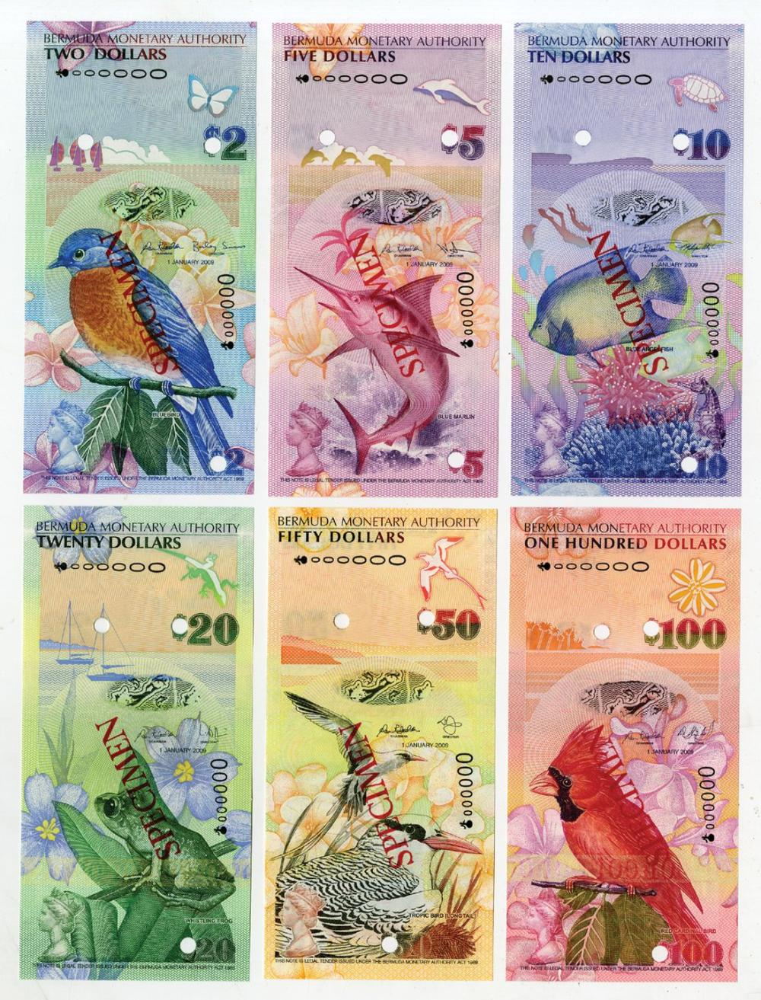

These underground pools are a sight to see in Bermuda. The cave is about 500m long and 62m deep. The clear water in the Crystal Caves allows you to see the base of the caves and there are white stalactites covered with crystallized soda straws above you. The Fantasy Caves have crystal clear water as well, but the walls are instead made of calcite mineral deposits.

Horseshoe Beach is one of Bermuda's most iconic. It is located on the south part on the main island, and is where most tourists are found. There are places to swim, walk, relax, and get food and drinks. The pink sands along with the turquoise water make it one of the most beautiful beaches in the world.
The National Museum of Bermuda is home to artefacts from Bermuda's history of over 500 years. The collection of over 75,000 artefacts include parts of shipwrecks, maps, and photograps. It is located at Bermuda's most western point and is about 16 acres. The National Museum of Bermuda wants to foster the following core values:
One current exhibit surrounds the history and the designs of Bermuda's bank notes. The beautifuly detailed and colorful notes display culturlly significant parts of Bermuda. Below is an example:
Make sure to visit Bermuda!